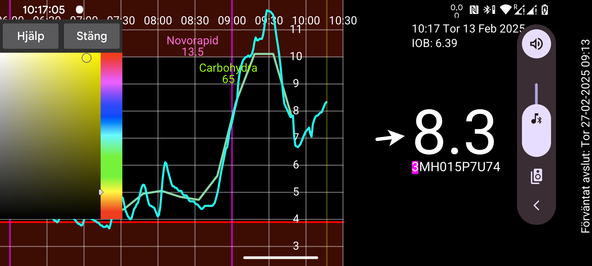

be de es fr it nl pl pt ru sv tr uk zh en
Här kan du ändra färgerna på siffror, kurvor och skanningspunkter. Tryck på en punkt på kurvan, en skanningspunkt eller ett värde (så att information om den visas). Därefter trycker du på en färg i färgmenyn. Kurvan, skanningspunkten eller värdet visas nu i den valda färgen.
I WearOS-versionen behöver du en klocka med bakåtknapp, eftersom att svepa tillbaka inte fungerar.